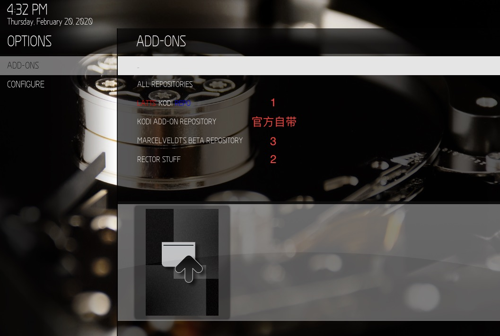

Multi-Mod在原皮肤上由很多美化和功能，我也没完全吃透，简单的实现几个。
插件的安装
Kodi在使用中如果缺少插件会提示安装，而需要其他插件需要自行安装。
安装插件源
我们需要安装几个下载插件源zip文件：
mod作者源：Latts Kodi Repo。
强大的Artwork Beef源：Rector Stuff 。
什么是Artwork Beef了解下https://rmrector.github.io/script.artwork.beef/
基本上算是影片搜刮艺术图片的程序。如果不需要电影、剧集等额外的艺术图片那么可以不用安装这个插件。
然后安装源，选择下载的zip不用解压，操作路径：
进入设置：插件→从ZIP文件安装
安装好后的样子

几个插件安装
Artwork Beef
进入设置，
插件→从库安装，在Rector Stuff源里，进入程序插件里面就有了。Media Icons Pack For Aeon Mq 7-Coloured
这个是媒体音轨、字幕的图标显示，好看。也是用MQ8.
在
Latts Kodi Repo源里，进入界面外观→图片集。Red Carpet
这个插件是显示女演员PNG图片。下面会说。
在官方源
Kodi Add-On Repository，进入界面外观→图片集，找到R开头的Red Carpet就是了。
Artwork Beef设置
设定完成前不要添加电影去扫描更新搜刮，如有错误请指正。
进入设置：插件→我的插件→程序插件→Artwork Beef→设置
General/常规
打开这两项扫描新媒体后会启动Artwork的扫描。
Tv shows/剧集、Movies/电影等
选择下载各种插图的数量，我选择5，其他的可以自行决定。
AnimatedPoster/AnimatedKeyart/AnimatedFanart-Requires Kyrdb
这里的意思是：是否从KyraDB下载动态电影海报等。
Downloading Artwork To Localfiles
这里是下载的图片保存的位置选择
Specific Types Below，这个默认设置，而下面的参数不做设定的话是保存到Kodi的Cache里，也就是说不会保存到你的电影存放目录里。All Configured Above所有的图片保存到电影存放目录。Kodi Cache Only保存到kodi的缓存里。以上按各位所需设置，我不喜欢存放到电影目录，所以我选择了3。
但是也有例外通过Kyrdb服务下载的动态海报图片是存储在电影目录的
Advanced/高级
这里可以开启第四项，扫描完毕后显示搜刮的数目提醒。
Web Services下面的
Enable Kyradb这一项是针对KyraDB提供的艺术图片开启的。需要注册账号，现在是免费的，https://www.kyradb.com/。开启后在下面填入API Key和User Key。这个是现在显示动态电影海报唯一的方法。
功能和美化
动态电影海报
什么是动态？
实际上是gif。
Kodi 18版本要实现显示动态gif有个前提，就是存储gif图片的位置必须存储在客户端本地目录里。
如果是在远程NAS里Kodi只能显示gif的第一帧。
但是windows客户端可以破除，那就是映射驱动器。kodi会认为是本地驱动器。
这个是上面说到的Artwork Beef搜刮的。
显示女演员PNG图片
这个我们安装Red Carpet插件的功能，介绍在这里。zip包下载网址。
彩色媒体音轨、字幕的图标
使用的是Media Icons Pack For Aeon Mq 7-Coloured插件，开启路径：
进入设置，皮肤设置→图标和图像→AUDIO/SUBTITLE，选择插件就行。
以上的设置及其他
直接图片展示方便：
对应的序号在下图中来设定（进入电影，按左方向建，如果你的首页是横向排列那按上方向键，弹出顶部菜单）：

天气功能
- 安装天气插件：
Weatherbio IO。
然后去weatherbit的网站注册，并获取API Key，进入插件设置输入API Key。
- 返回主页进入天气，按左方向键打开菜单，如果你的首页是横向排列那按上方向键，进入天气设置，进入下面的天气选项，然后天气信息服务选择下好的插件
Weatherbio IO，选择后点下面的设置，设定地点（如果API Key正确的话默认有个纽约的地点），搜索是输入拼音的城市名称就行。确定会提示下载动态天气图标安装就行。
皮肤大部分界面都会显示天气了。
皮肤天气特效
进入皮肤设置，在
VISUAL EFFECTS选项里，按需开启：
最后
我们就可以愉快的添加我们电影了。
Kodi已经是跨很多操作系统的的程序，是本地局域网电影播放和收集为一体的软件，还有很多可扩展的功能，有待大家去发现，有意见和问题可提出。